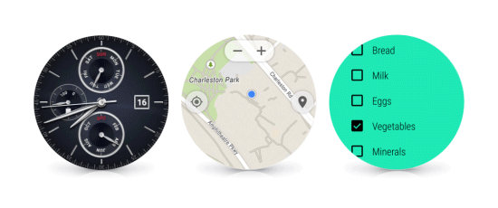
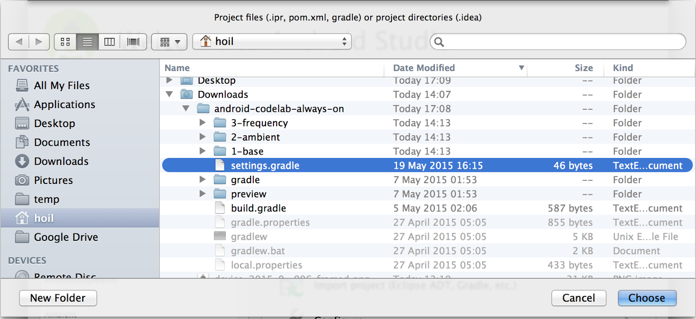
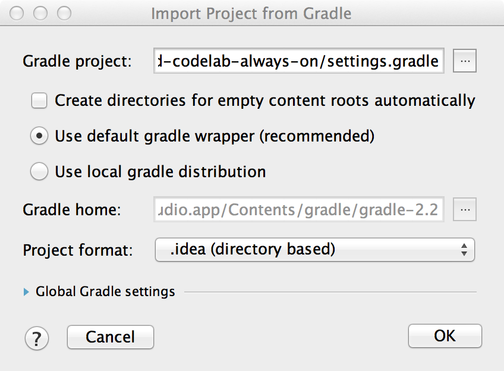
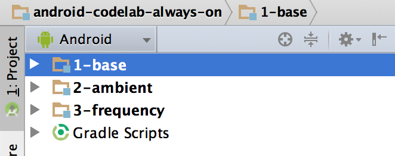
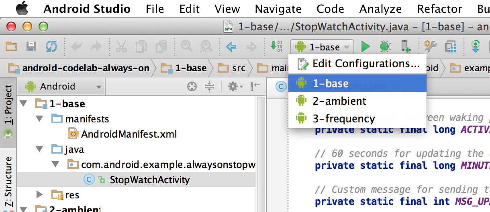
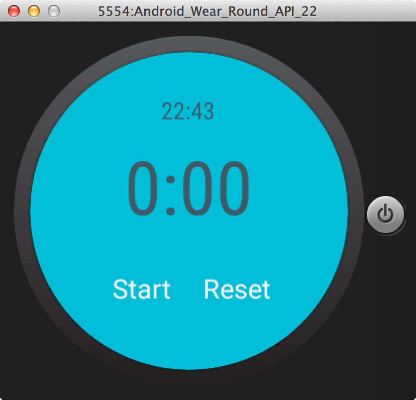
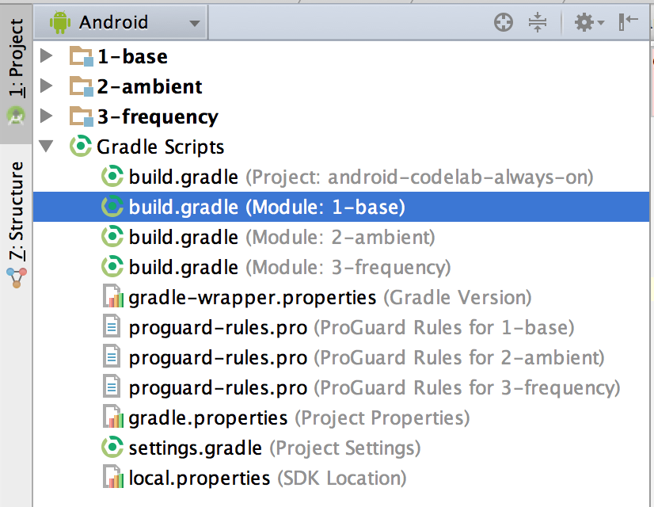
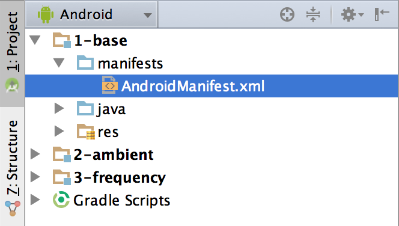
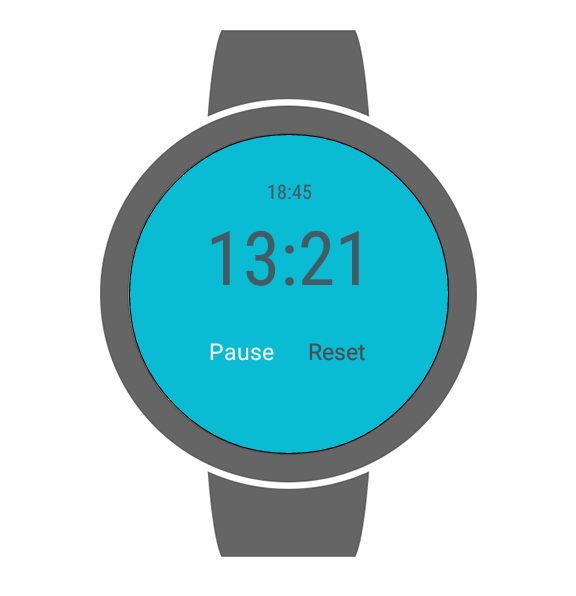
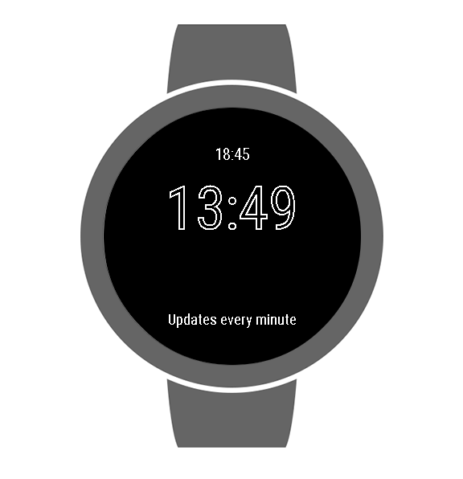

When you buy a watch you want it to, well, tell the time. So most Android Wear watches include an always-on screen—no tapping, twisting or shaking required to see what time it is. With Android Wear 5.1 or higher, we have expanded this option to apps so that they can stay visible as long as you need them instead of disappearing when you drop your arm. Apps that supports this functionality are called always-on apps. There are numerous use cases that can benefit from being an always-on app, from shopping lists to exercise tracking.
This codelab will introduce you to the key concepts behind always-on apps. It will then walk you through converting an existing stopwatch app into an always-on app which will go on for as long as the user needs it . There is also a bonus section on increasing the refresh rate of the app while it is in ambient mode from once per minute to once every 10 seconds.
Concepts
To start off let’s learn a little bit about Android Wear and the key concepts behind always-on apps.

Android Wear is a wearable platform designed for small, powerful devices worn on the body. It is designed to deliver useful information when you need it most, intelligent answers to spoken questions, and tools to help reach fitness goals.
Some of these interaction can be brief, for example checking the location of your next meeting. Others can be longer, such as referring to your grocery list while shopping. During such longer interactions the default screen timeout can pause the application in the middle of the activity, resulting in friction in the user experience.. There are two potential solutions to this issue:
- Bad: Override the default system setting and keep the screen on during the activity, which keeps the system awake and the screen on full brightness, and as a result drains a significant amount of the battery.
- Good: Convert the application to become an always-on app, which enables the application to stay in the foreground while allowing the system to sleep when the user is not interacting with the application, and also allowing the application to update the screen.
Similar to watch faces, an always on app has two modes and is able to switch between them in a session:
-
Interactive: The user is paying full attention and is able to control the application. Typically apps will be in full color and may offer fluid animation when in this mode.
- Ambient: The watch is not in active use. The system is in sleep mode while the screen remains on and is refreshed once a minute by default.
With the basic concepts out of the way, let’s get started! To make this as quick as possible, we have prepared a sample project for you to build on. It contains some basic code and application settings necessary for building watch faces.
You can either download all the sample code to your computer...
...or clone the GitHub repository from the command line.
$ git clone https://github.com/googlesamples/io2015-codelabs.git
Start Android Studio, and select “Open an existing Android Studio project” from the Welcome screen, open the project directory, navigate to the directory wear/always-on and open the build.gradle file in that directory:

If the following screen appears, click OK on "Import Project from Gradle" screen without making any changes.

In the upper left hand corner of the project window, you should see something like this:

There are three folder icons. Each of them are known as a “module”. Please note that Android Studio might take several seconds to compile the project in the background for the first time. During this time, you will see a spinner in the status bar at the bottom of Android Studio:

We recommend that you wait until this has finished before making code changes. This will allow Android Studio to pull in all the necessary components. In addition, if you get a prompt saying "Reload for language changes to take effect?" or something similar, select “Yes”.
If you need help setting up an Android Wear emulator, please refer to the “Set Up an Android Wear Emulator or Device” section of the "Creating and Running a Wearable App" article.
Let's run it on a watch / emulator.
- Connect your Android Wear device or start an emulator.
- In the toolbar, select the “1-base” configuration from the drop down and click the green triangle run button next to it:

- Select your Android device or emulator and click OK. This will install the watch face on the Android Wear device or emulator.
- After a couple of seconds, your watch face is built and ready to deploy. You will see a spinner in the status bar at the bottom of Android Studio while this is happening:

- If it is not already at the “4: Run” tab at the bottom left hand side of Android Studio, select that tab and you can see how the installation progress. At the end of the installation process, you should see something similar to this:
Waiting for device.
Target device: Android_Wear_Round_API_22 [emulator-5554]
Uploading file
local path: /Users/hellouser/AndroidStudioProject/android-codelab-always-on/1-base/build/outputs/apk/1-base-debug.apk
remote path: /data/local/tmp/com.android.example.ambientstopwatch
Installing com.android.example.ambientstopwatch
DEVICE SHELL COMMAND: pm install -r "/data/local/tmp/com.android.example.ambientstopwatch"
pkg: /data/local/tmp/com.android.example.ambientstopwatch
Success
Launching application: com.android.example.ambientstopwatch/com.android.example.alwaysonstopwatch.StopwatchActivity.
DEVICE SHELL COMMAND: am start -n "com.android.example.ambientstopwatch/com.android.example.alwaysonstopwatch.StopwatchActivity" -a android.intent.action.MAIN -c android.intent.category.LAUNCHER
Starting: Intent { act=android.intent.action.MAIN cat=[android.intent.category.LAUNCHER] cmp=com.android.example.ambientstopwatch/com.android.example.alwaysonstopwatch.StopwatchActivity }- Once that has happened, the stopwatch app should automatically launch.
- If you do not see this, try deploying the app again by pressing the green triangle button in the toolbar.
Here's what it should look like. Don’t worry if the power button to the right do not appear in the emulator - this is okay!

All right, you’re set up and ready to start converting the application into an always-on app. We’ll set off using the 1-base module, which is the starting point for the stopwatch that we'll be building upon. You will be adding code from each step to 1-base.
Each of the following modules can be used as reference points to check your work or for reference if you encounter any issues.
Overview of key components
-
StopwatchActivity- This is our stop watch. - This file is located in the directory1-base/java/com/android/example/alwaysonstopwatch. In Android Studio, this is located under1-base/java/com.android.example.alwaysonstopwatch. Within this Activity class, we have: -
onCreate- In this method, we wire up the UI elements (buttons, text views, etc). It also contains code which attaches the buttons to actions when they are clicked. -
mActiveModeUpdateHandlervariable andUpdateHandlerclass - These two work together to power the stopwatch by updating the screen once a second when the stopwatch is in action. -
mActiveClockUpdateHandlervariable andUpdateClockHandlerclass - These two work together to power the current time (updates once a minute). While the stopwatch is the main use-case for our app, users will still want to know the time if they are timing something that could last many minutes to hours. -
toggleStartStop- This controls the behaviour when the stopwatch is started or paused.. -
res/layout/activity_stopwatch.xml- This is the layout of the stop watch UI.directory where the screen layout is stored.
Summary
In this step you’ve learned about:
- Android Wear and the concepts behind always-on apps
- The basics of our starting point - 1-base
- How to connect to Android Wear device, deploy the app and run it!
Next up
Let’s start making this app an always-on app!
In this step, we will start making our app an always-on app. It will have the ability to jump between active and ambient mode and it will stay in the foreground until the user explicitly dismisses it. The screen will update once a minute which is the default for always-on apps.
Gradle file changes
In order to reference the new functionalities related to always-on apps, we need to add one dependencies to the build.gradle file for com.google.android.wearable:wearable:1.0.0:

Manifest changes
To convert our app to an always-on app, we need to change several attributes related to our app in AndroidManifest.xml . This is located here:

We need to make the following changes to the file:
- Always-on apps require the permission of keeping a wake lock, so put the following in between the
manifestanduses-featureelements:
- Always-on app is a new concept introduced in Android Wear 5.1. To specify that the app should only be installed on devices running Android 5.1 or higher, insert the following between
applicationandactivityelements:
- Comment out / remove the following line in
StopwatchActivity.javawhich keeps the screen on all the time:
Switching on Ambient Mode
Supporting ambient mode and making our app an always-on app requires additional lifecycle states for the activity. These additional states are built into a new activity class called WearableActivity. To support ambient mode, we need to perform the following steps:
- Change
StopwatchActivityfrom extendingActivityto extendingWearableActivity:
- In onCreate, call
setAmbientEnabled():
Tell the application what to do in ambient mode
If you run the application now, it will stay in the foreground but it does not understand what it should do differently in interactive mode and ambient mode. As a result, in ambient mode, it will be stuck at whatever time that it gets to and there will be no update until you wake it up into interactive mode.
Before we begin changing the lifecycle code, we will need to: 1) add a notice to remind the user that the screen is updated once a minute (this is the default for always-on apps and you can find out how you can change it in the next section) and 2) load some of the settings including the colours that we use for when we are in interactive mode so we can wake up to them from a black and white ambient mode:
- In
string.xmlunderres/values, add the following:
- In
activity_stop_watch.xmlunderres/layout, add the following after the last button control within theGridLayoutelement:
- In
StopwatchActivity - Add a private
TextViewvariable calledmNotice. - Add a private
GridLayoutvariable callmBackground - Add two class level private variables for representing the background and foreground colours in interactive mode respectively:
- Attach reference to
mNoticeinonCreateand set anti-aliasing to false as this will take less processing power to render:
- Attach a reference to the background to
mBackgroundinonCreate:
- Load these settings from the
color.xmlsetting file by adding the following lines into theonCreatemethod inStopwatchActivity:
Another thing we should do is to stop the handler from running in ambient mode, in the method updateDisplayAndSetRefresh we should add a check to see if the watch is in ambient mode before we schedule a delay call to the handler. Developers can check whether the app is currently in ambient mode by calling isAmbient() - wrap this code in a check like so
When the watch is in ambient mode (and in deep sleep), there is a callback for updates, so you do not need the handler. In addition, a handler can not wake up the processor from a sleep state, so it won't work anyway. We will expand on this in the next section.
To tell the system what to do in ambient mode, we override three methods
onEnterAmbient(...)
This is called when the application goes from interactive to ambient mode. This is where we typically change the formatting of the screen elements. Feel free to Copy & Paste the following code into the StopwatchActivity to account for ambient mode.
onExitAmbient()
Basically we invert what we have done before within onEnterAmbient(...)
onUpdateAmbient()
This method is being called once a minute while in ambient mode by the framework and developers should tell Android Wear what to update by:
- Call the parent method -
super.onUpdateAmbient(); - Update the clock by calling
updateClock() - Update the elapsed time by calling
updateDisplayAndSetRefresh()
If you run the app now, it should show the something similar to following in interactive mode - it’s not all that different to before:

However, if you wait for a timeout on a real device (for emulator press F7 or fn + F7) to switch to ambient mode, you will see the following and this will update once a minute:

Having problems?
If you see the error INSTALL_FAILED_MISSING_SHARED_LIBRARY, try updating the Wear emulator to version 22 or later. The ambient APIs are only available from this version.
Summary
In this step you’ve learned about:
- Turning an Android Wear app into an always-on app
- Learn how to handle lifecycle changes entering, exiting ambient mode and what should be updated once a minute while in ambient mode
Next up
An optional activity to learn about increasing the update frequency of the app to more than once a minute while in ambient mode. Most apps won’t need to update faster than once per minute but this maybe appropriate, for example, for a running app showing the user the current pace.
If you still have time but don’t fancy having a go at increasing the refresh rate, we encourage you to alter the different parameters of the screen elements, for example, layout, stroke size, color of the various screen element, etc. Let’s see what you get!
For some applications, developers may want to update more frequently than once per minute. Since the Android Wear device is in deep sleep in ambient mode, the Handler class will not run in this state. As a result, we will need to setup an AlarmManager which will wake up the application at set intervals and update the screen.
Set up the AlarmManager
The first step is to set up the AlarmManager variable and a PendingIntent which will tell Android which Activity to launch when the AlarmManager fires. To do this, we will make the following changes in StopwatchActivity:
- Create two private variables:
- An
AlarmManagernamedmAmbientStateAlarmManager - A
PendingIntentnamedmAmbientStatePendingIntent - Create a new static variable (
AMBIENT_INTERVAL_MS) of type long for how often the screen will be updated. In our case, we will set this toTimeUnit.SECONDS.toMillis(10)or 10 seconds.
- In the method onCreate, we will initialise both variables:
- For
mAmbientStateAlarmManager, we set it to(AlarmManager) getSystemService(Context.ALARM_SERVICE); - For
mAmbientStatePendingIntent, - Create an
Intentwhich points at the StopwatchActivity.class:
- Initiate
mAmbientStatePendingIntentusing the following.
-
AlarmManagerrequires a permission to run. OpenAndroidManifest.xmland put the following in just below theWAKE_LOCKpermission we added in the last step:
- To keep the UI consistent, update the following string value in
string.xmlunderres/values,
Activate the AlarmManager
With the basics in place, it’s now time to add the code to trigger the AlarmManager. We need to update the code where previously we would have had the Handler code updating the screen. So this will be in the updateDisplayAndSetRefresh method:
- Add additional condition for when the application is not in ambient mode:
- In this new conditional bracket (i.e. in the
elsepart which is when the watch is in ambient mode), we calculate how long we should wait until the next alarm usingSystem.currentTimeMillis():
- Cancel any previous alarm using the
cancelmethod onmAmbientStateAlarmManagerfeeding in themAmbientStatePendingIntent.
- Schedule the next alarm:
- In
onExitAmbientmode, check if the stopwatch is running just belowsuper.onExitAmbient(). If it is, cancel any alarm using thecancelmethod onmAmbientStateAlarmManager. Don’t worry about starting theHandlerrelated code which will update the screen once a second in interactive mode. This is handled byupdateDisplayAndSetRefreshwhen it is called further down in the method. - Cancel any alarm in
onDestroymethod when the application exits - Add a new method
onNewIntent, this will be called when the alarm is fired:
If you run the application again, it should update every 10 seconds:
Summary
In this step you’ve learned about:
- How to increase the frequency of updates
- Learn how to use
AlarmManagerto schedule these updates even when the device is in deep sleep in Ambient mode